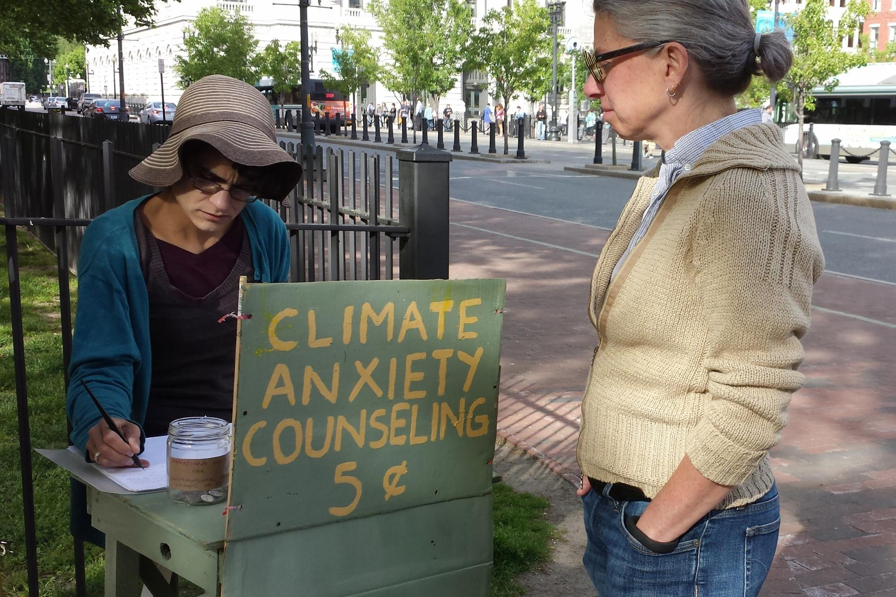
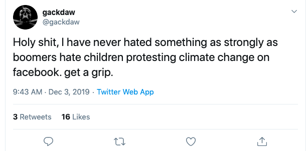

Our podcast aims to facilitate a conversation around the topic of Climate Anxiety
from the perspective of college students. The conversation we have highlights multiple topics that have been in the news and on the minds of our generation. Please follow along with the podcast by pressing play and scrolling down.
Climate Anxiety
Wikipedia Definition: worry or agitation caused by concerns about the present and future state of the environment.
 CLICK HERE FOR ARTICLEGenerational Gap
If the older generation doesn’t help out, everything we will eventually do will be too late.

CLICK HERE FOR ARTICLE
Exxon
The decision was made to continue to maximize profits at the expense of contributing to the existential climate crisis
 CLICK HERE FOR ARTICLE
CLICK HERE FOR ARTICLE